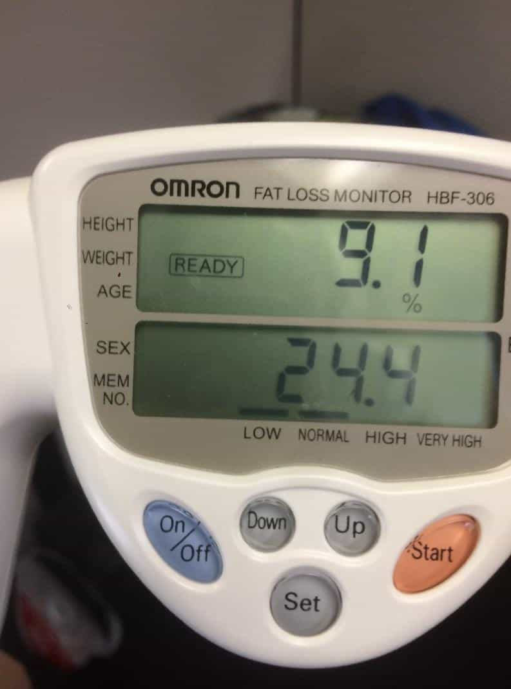
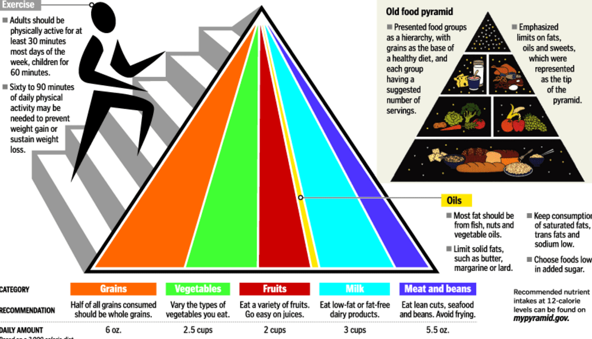
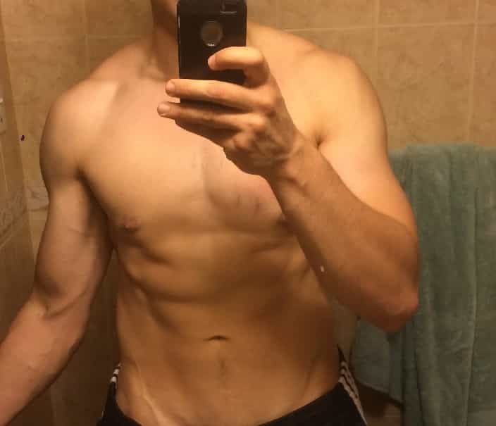

Summer is rapidly approaching, which means that we’re going to all be wearing progressively lighter and more revealing clothing—which can of course be a blessing or a curse for your game, depending on your body composition. If you’ve read my regular workout articles, you should have at this point built up a fair degree of muscle, lost some weight, and developed a mighty fine degree of flexibility, all of which will certainly make you more attractive to the fair sex.
But some want to take it a step further—to not only make themselves strong and functional men, but to trim the body fat to such a degree that every single vein and muscle is defined, in the way that a rough diamond is cut and polished to a radiant luster.
Having, in fact, gotten down to a single digit body fat percentage for the first time in my life recently (9.1% to be precise), I have written this article to tell you how to do so, and whether or not, in fact, you even should do so.

That high pitched sound you’re hearing is the REEEEEE-ing of fat women shrieking that “BMI means nothing!!1”
The Meat and Potatoes
Eating a “cutting diet” is in fact, one of the easiest things you can do, provide that you have imbibed the concept of eating to save money.
I underlined it, italicized it, and bolded it—that’s how important it is. If you understand this concept, combined with what foods are healthy and what foods are not healthy, I guarantee that you will not only lose weight, but you’ll lose weight without even realizing you’re losing weight. By far, this is the most important concept you have to understand for this diet to work,
I’ll go out on a limb here and say that, for general purposes of health and well-being, you do not need to spend more than 200 dollars a month on groceries, and every cent of that 200 dollars can be put into good, healthy, nourishing food.
And please, before we get into how to do this, spare me any whiny fatbody diatribes about how “it’s so hard to eat healthy food in America, muh food deserts”, and so forth. By the time you finish this chapter, you’ll never sling that excuse again. You can read more about why that excuse is bullshit right here.
A good rule of thumb for purchasing food is to ask yourself “Would a man from the year 1900 recognize this as food?” If not, it’s probably not something you should be eating. Rates of obesity, heart disease, and other objective measures of bad health were much lower in the gilded age then they are now, to say nothing of a few centuries before that. Avoid junk food, or overly processed food, keep it simple, and you should be fine. And if you really need help on what food is healthy and what food is not healthy, go to a dietician, they’ll likely have free pamphlets that will give you all the information you could ever possibly need.
You’ve gone to public school, you’ve seen the food pyramid—it’s not bad, which is rare to say for a government program, but in fact the government has made some good efforts in reducing obesity—if only because the USG realizes that a nation of lardasses will not be productive laborers. Just eat this, and you’ll more or less get all the nutrients you need.

And if you’re eating to save money, you will by definition be eating less food. A good way of rationing food that I have discovered is to eat “from the palm of your hand”. What this means is that all your units of food should fit in the palm of your hand. IE: Your vegetables should fit in the palm of your hand, your meat, and your carbs. That’s a meal, low in calories and low in price, while still giving you all of the necessary nutrients to function.
Does that sound a little bland? It can be, but you can throw various condiments and spices on it to liven things up a bit. Since you’re trying to lose weight, you’re going to have to prioritize nutrition and cutting calories over being a gourmand. You can’t have everything in life, deal with it.
That will all suffice for purposes of simply losing weight and retaining a good amount of muscle mass (of course, if you want to ADD more muscle mass, you will of course have to increase your caloric and nutritional consumption).

Yours truly doing the “shirtless douchebag mirror selfie” thing—for my adoring fans, of course.
Should You?
Now that you know how to do it, you must ask—should you? From what I have seen, cutting down to a body fat percentage lower than 12% or so doesn’t really have too much of an effect on your athletic performance, either positive or negative. While I have found that my calisthenic training has been made slightly easier with getting super lean, I have seen it argued that, depending on what sport/athletic discipline you’re engaging in, trimming down to such a high degree may make you less physically capable (in particular pure strength sports like Olympic weightlifting, certain types of grappling, etc.), as well as taking away your body’s natural “shock absorber”—there’s a reason why Roman gladiators cultivated a layer of flab, and it was specifically to minimize the likelihood of a deep cut causing them to bleed out.
Similarly, bare knuckled boxers seem a bit more “burly” than their modern counterparts, probably to reduce the sharp pain of bare knuckles, but on the other hand, having that clearly defined V-Taper and abdominal muscle chain does sit well with the ladies—and when you get down to it, why else are we all here? So it really comes down to a debate of aesthetics versus performance. And as for what you specifically want, that’s entirely up to you.
Read More: 4 Superfoods And Their Effectiveness